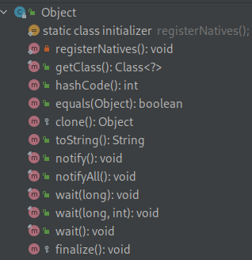
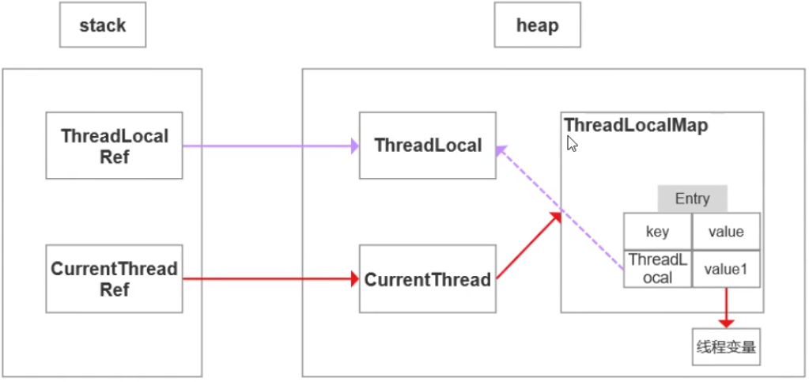

基础
https://moyu-zc.gitee.io/2021/06/23/%E5%85%AB%E8%82%A1%E6%96%87%20---%20Java%E5%9F%BA%E7%A1%80/
Java的8种基本类型
byte, char, short, int, long, double, float, boolean
装箱和拆箱
自动装箱是Java编译器在基本数据类型和对应的对象包装类型之间做的一个转化
| 基本数据类型 | 包装类型 |
|---|---|
| boolean | Boolean |
| char | Character |
| byte | Byte |
| short | Short |
| int | Integer |
| long | Long |
| float | Float |
| double | Double |
String类型可变吗
不可变
String类声明为final类，，不可继承，同时内部也未提供修改的方法，所以不可变
String, StringBuffer, StringBuilder的区别
String字符串常量StringBuffer字符串变量(线程安全)StringBuilder字符串变量(非线程安全)
&和&&的区别
- & 按位与和逻辑与。即使左边的表达式的值是
false，右边还是会继续运算 - && 短路与运算。
Java的基本特性
- 封装 把对象的属性和行为(数据)结合为一个独立的整体，并尽可能隐藏对象的内部实现细节。
- 继承 子类继承父类的数据属性和行为，并能根据自己的需求扩展出新的行为，提高了代码的复用性
- 多态 允许不同的对象对同一消息做出响应。里氏代换原则
抽象 为了继承而存在
interface与abstract的区别
- 关键字不同
- 只能单继承，可以多实现
- 构造方法：abstract类可以有，但不能有abstract的构造方法，interface不能有
- 变量：非static的，interface不能有。static的，abstract类中不能被abstract修饰
- 变量：abstract类可以有普通成员变量，interface没有普通成员变量(只能static)
- 方法：static的，abstract类中不能被abstract修饰
- 方法：abstract中方法访问类型可以是
public,protected。接口中只能是public
重载和重写
override 重写
- 方法名、参数、返回值相同
- 子类方法不能缩小父类方法的访问权限。(需要可以通过父类调用到子类)
- 子类方法不能抛出比父类方法更多的异常。(为了通过父类引用调用时，不抛出异常)
- 存在于父类和子类之间
- 方法被定义为private/final不能被重写
- private 只能被自身类访问，子类不能访问，
- static 与类绑定，与任何实例都无关。
static是编译时静态绑定的，override是运行时动态绑定的
overload 重载
- 参数类型、个数、顺序至少有一个不相同。签名不同
- 存在于父类和子类、同类中
final, finally, finalize
- final 用于声明属性、方法、类。分别表示属性不可变，方法不可覆盖，类不可继承
- finally 异常处理语句结构的一部分，表示问题执行
- finalize 是Object类的一个方法，在垃圾收集器执行的时候会调用被回收对象的此方法
Object中有哪些方法
getClass()获得运行时类型hashCode()用于哈希查找。重写equals的方法一般都要重写hashCodeeuqals()判断相等toString()clone()实现对象的浅复制，只有实现了Cloneable接口才可以调用该方法wait()使当前线程等待该对象的锁。当前线程必须是该对象的拥有者，也就是具有该对象的锁。会释放当前对象的锁notify()随机唤醒在该对象上等待的某个线程。notifyAll()唤醒在该对象上等待的所有线程。finalize()无法确定该方法什么时候被调用，很少使用

怎么实现一个对象的(深度)克隆
clone是浅拷贝，只克隆了自身对象和对象内实例变量的地址引用。- 使用
ObjectStream进行深度克隆。先将对象序列化，然后再反序列化。
return和finally同时出现
Return先将待返回的数，放到一个空间，然后执行finally中的方法，执行结束后再返回方法(弹出当前栈帧)。
如果finally里面有return，那么会重新将数放到空间里面(覆盖之前的数据)
Error和Exception的区别是什么
- Error 通常为虚拟机相关错误。如系统崩溃，内存不足，堆栈溢出等。编译器不会对这类错误检测，也不应对这类错误进行捕获，一旦这类错误发生，通常仅靠应用程序本身无法恢复，应终止应用程序
- Exception 可以在应用程序中进行捕获并处理的，应对其进行处理，使应用程序可以继续正常运行
throw和throws的区别是什么
- throw 用在方法内部，只能用于抛出一种异常。受查异常和非受查异常都可以被抛出
- throws 用在方法声明上，可以抛出多个异常，用来标识该方法可能抛出的异常列表。
Java常见异常
- ArrayIndexOutOfBoundsException 数组索引越界。
list.get(-1) - StringIndexOutOfBoundsException 索引越界。
"aaa".indexOf(-1) - NullPointerException 空指针异常。
null.get(0) - ClassNotFoundException 遍历classpath找不到对应名称的类文件
序列化
将那些实现了Seralizable接口的对象转换成一个字节序列，并能够在之后将这个字节序列完全恢复为原来的对象。
comparable接口和comparator接口
- 排序接口 Java提供了只包含一个
compareTo()方法的Comparable接口。返回负数，0，正数来表明输入对象小于，等于，大于已经存在的对象。如果一个类实现了此接口，就意味着“该类支持排序” - 比较器接口 Java提供了包含
compare()和equals()两个方法的Comparator接口。如果类本身不支持排序，可以通过建立一个比较器进行排序
并发
ReentrantLock中tryLock()和lock()的区别
- lock() 阻塞加锁。直到获取到锁。可重入(计数加1)
- tryLock() 尝试获取锁，非阻塞。常用于自旋锁
1 2 3 4// 自旋锁 while (!rentrantLock.tryLock()) { // 其它事情 }
ReentrantLock中的公平锁和非公平锁的底层实现
不管是公平锁还是非公平锁，它们的底层实现都会使用AQS进行排队。
- 公平锁：在
lock()方法加锁时，先检查AQS队列中是否存在线程在排队，如果有线程在排队，则当前线程也进行排队 - 非公平锁：不检查是否有线程在排队，直接竞争锁
不管是公平锁还是非公平锁，一旦没竞争到锁，都会进行进行排队，当锁释放时，都是唤醒排在最前面的线程。非公平锁只是体现在了线程加锁阶段，而没有体现在线程被唤醒阶段
Even when this lock has been set to use a fair ordering policy, a call to tryLock() will immediately acquire the lock if it is available, whether or not other threads are currently waiting for the lock.
ReentrantLock是可重入的，默认为非公平锁
CountDownLatch和Semaphore的区别和底层原理
- CountDownLatch 表示计数器。给CountDownLatch设置一个数字，一个线程调用
CountDownLatch的await()将会阻塞，其它线程调用countDown()方法来对CountDownLatch中的数字减一，当数字被减成0后，所有await的线程将被唤醒 对应的底层原理就是：调用await()方法的线程会利用AQS排队，一旦数字被减为0，则会将AQS中排队的线程依次唤醒 - Semaphore 表示信号量。设置许可的个数，表示最多多少个线程使用该信号量，通过
acquire()来获取许可，如果没有许可可用则线程阻塞，并通过AQS排队，可以通过release()来释放许可。
sleep(), wait(), join(), yield()的区别
- 锁池 所有需要竞争同步锁的线程都会放在锁池中。比如当前对象的锁已经被其中一个线程得到，则其它线程需要在这个锁池进行等待，当前面的线程释放同步锁后锁池中的线程去竞争同步锁，当某个线程得到锁后会进入就绪队列，等待CPU资源分配。
- 等待池 当我们调用
wait()方法后，线程会放到等待池中，等待池中的线程不会去竞争同步锁。只有调用了notify()或notifyAll()后等待池的线程才会开始去竞争锁。- notify 随机从等待池中选出一个线程放到锁池
- notifyAll 将等待池中的所有线程放到锁池中
区别
- sleep
Thread类的静态本地方法。不会释放lock。不依赖synchronized。不需要被唤醒。一般用于当前线程休眠或轮循暂停。会让出CPU执行时间且强制上下文切换。 - wait
Object类的本地方法。释放lock，而且会加入到等待队列中。依赖synchronized。需要被唤醒。多用于多线程之间的通信。有机会重新竞争到锁继续执行
sleep就是把CPU的执行资格和执行权释放出去，不再运行此线程。当定时时间结束再取回CPU资源，参与CPU的调度，获取到CPU的资源后就可以继续运行了。如果sleep时，该线程有锁，会将锁带着进入了冻结状态
- yield 执行后线程直接进入就绪状态，马上释放了CPU的执行权，但是依然保留了CPU的执行资格，所以有可能CPU下次进行线程调度还会让这个线程获取到执行权继续执行。
- join 执行后线程进入阻塞状态，直到其它线程结束或中断当前线程
synchronized的偏向锁、轻量级锁、重量级锁
- 偏向锁 在锁对象的对象头中记录一下当前获取到该锁的线程id，该线程下次如果又来获取该锁就可以直接获取到了
- 轻量级锁 由偏向锁升级而来，当一个线程获取到锁后，如果有第二个线程来竞争锁，偏向锁就会升级为轻量级锁。轻量级锁是为了和重量级锁区分开为，底层通过自旋来实现，并不会阻塞线程
- 重量级锁 如果自旋次数过多仍然没有获取到锁，则会升级为重量级锁，会导致线程阻塞
- 自旋锁 线程在获取锁的过程中，不会去阻塞线程。阻塞和唤醒这两个步骤都是需要操作系统去进行的，比较消耗时间，自旋锁是线程通过
CAS获取预期的一个标记，如果没有获取到，则继续循环获取。这个过程线程一直在运行中，相对而言没有太多的操作系统资源，比较轻量CAS sun.misc.Unsafe#compareAndSwapInt
synchronized和ReentrantLock的区别
- synchronized是一个关键字，ReentrantLock是一个类
- synchronized会自动的加锁与释放锁，ReentrantLock需要程序员手动加锁与释放锁
- synchronized的底层是JVM层面的锁，ReentrantLock是API层面的锁
- synchronized是非公平锁，ReentrantLock可以选择公平锁或非公平锁
- synchronized锁的是对象，锁信息保存在对象头中。ReentrantLock通过代码中int类型的state标识来标识锁的状态
- synchronized底层有一个锁升级的过程
ThreadLocal的底层原理
ThreadLocal是Java中所提供的线程本地存储机制。可以将数据缓存在某个线程内部，该线程可以在任意时刻、任意方法中获取缓存的数据- 煤层是通过
ThreadLocalMap来实现的，每个Thread对象(不是ThreadLocal)中都存在一个ThreadLocalMap，Map的key为ThreadLocal对象，Map的value为需要缓存的值 - 如果在线程池中使用
ThreadLocal会造成内存泄漏。因为当ThreadLocal对象使用完之后，应该要把设置的key,value，即Entry对象进行回收，但线程池中的线程不会回收，而线程对象是通过强引用指向ThreadLocalMap，ThreadLocalMap也通过强引用指向Entry对象。解决方法是：在使用了ThreadLocal对象之后，手动调用ThreadLocal.remove()清除Entry对象 - 经典的应用场景就是连接管理(一个线程持有一个连接，该连接对象可以在不同的方法之间进行传递，线程之间不共享同一个连接) 数据库租户的id
Thread对象含有ThreadLocal.ThreadLocalMap threadLocals = null;，由一个个的Entry组成：key为ThreadLocal，value为对应的值

- 强引用 使用最普遍的引用(new)，一个对象具有强引用，不会被垃圾回收器回收。当内存空间不足，Java虚拟机宁愿抛出OutOfMemory错误，使程序异常终止，也不回收这种对象
- 弱引用 JVM进行垃圾回收时，无论内存是否充足，都会回收被弱引用关联的对象。用
java.lang.ref.WeakReference。可以在缓存中使用弱引用
正确使用方法
- 每次使用完
threadlocal都调用它的remove()方法清除数据 - 将
threadlocal变量定义为private static，则任何时候都能通过
如何查看线程死锁
-
可以通过
jstack命令来查看- 导出线程和堆栈信息
- 搜索业务代码
com.*** - 发现有数据库
queryList操作 - 查看代码是否有全表扫描的风险
-
如果是操作数据库的死锁，可以查询数据库
1 2 3 4 5 6 7 8-- 查询是否锁表 show open tables where in_use > 0 -- 查询进程 show processlist; -- 查看正在锁的事务 select * from information_schema.innodb_locks; -- 查看等待锁的事务 select * from information_schema.innodb_lock_waits;<++>